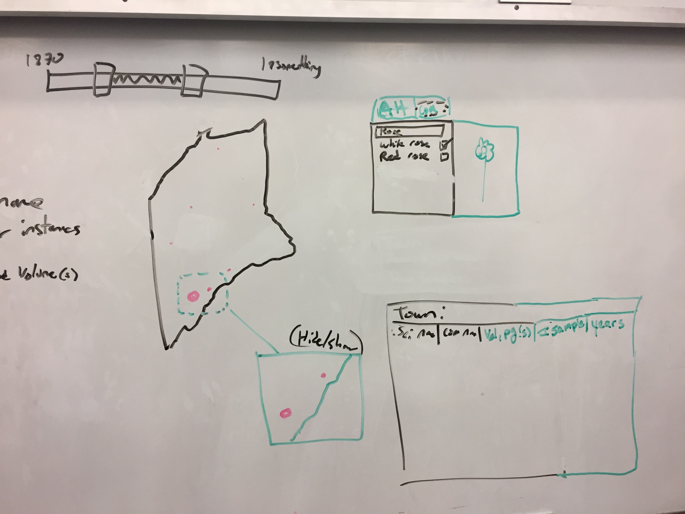

CSCI 3665: Interactive Data Visualization
Dataset Description
Sophia Ardell, Marcus Christiansen, Tucker Gordon
November 21, 2016
Kate Furbish Collection
Descriptions of Project and Data
Project Description
Dataset Description
Questions that can be answered using planned interactions
-
Where did she go and when?
-
Where are certain flora located?
-
Where in the collection is this flora (regarding page and volume number)?
-
Where did she find the most flora?
Sketch of initial interface and interactions

Interactions:
-
The year slider allows a user to select a range of years that they want to explore. Only samples that occured within that range will appear in the visualization.
-
The search box has two tabs: one for searching by AH Scientific name, and the other for searching by common name. The user can search for a flora by name, and then check any results that they want to visualize (a picture of the flora from the collection may appear as well). Whenever a flora is checked, a dot will appear at all of the towns in which that flora was sampled (within the specified year range). If there is already a dot there (i.e. there has already been a flora checked with a sample there), the dot will increase in size. There will also be away to select or deselect all flora. Additionally, an image of the selected flower will be displayed. If we have enough time, we would may like to implement a forced layout where each flower sample is its own dot, where we forced the dot to be within a certain radius of where it was found.
-
If the user clicks on a town, the inspector box will populate with information about all of the checked flora that have samples in that town. For each type of flora, the user will be able to see both the scientific and common names, the volume and pages in which it appears within the collection, the total number of samples, and the years in which the flora was sampled in that town.
-
Clicking on a town will also bring up a zoomed in image of the town and the area around that the user can augment.
Existing D3 layouts that we will use
- Geomapping
- Example 1
- Example 2
(Note that we will also be doing a lot of other functionality that will use D3 (i.e. dialog boxes, zooming in, etc.), but Geomapping is the only actual layout that we will be using)
New D3 Concepts
- Geomapping
-
The main visualization of our project is an interactive map of Maine, and therefore the most important skill we have to learn is Geomapping. We will be learning and implementing techniques from Scott Murray’s textbook chapter “Geomapping”. Here, we will be learning about GeoJSON, paths and projections.
- Zoomed In View Box
-
Another feature we want to implement is the zoomed in view of the town. We will need to learn how to create a seperate SVG which displays the zoomed in view of the map of Maine. We will learn how to transform the map of Maine to zoom in on specific towns on the map.
- Slider
-
We are also interested answering where Kate Furbish went and when. We intend to do this by implementing a slider that the user can manipulate to change the flora samples which will be displayed on the map based on the date Kate Furbish found them. In order to achieve this, we need to learn how to implement a d3 slider, which includes d3’s scale & behaviors functions, as well as how to connect the slider to the map so that the map redraws based on the user's decisions.
- Event Handling with Buttons
-
When the user selects which type (or collection) of flora which they wish to view, we need to redisplay the dots on the map accordingly, so that only the selected flora samples are displayed. We need to learn how to gather the user input and redraw the map dots correctly.
- Predictive Search
-
When the user begins typing in the name of a type of flora which they wish to see, we want the list of flora options to reorder and sort according to what the user inputted so that we present them with a list of options which is most like what they wrote in the search box. We will need to learn how predict which options the user is looking for so that we can help them find the option they wish to see (much like Google's search engine).
- Force Layout
-
If we have enough time in order to implement the forced layout, we will need to learn how to execute a forced layout and ensure that the corresponding flora sample dots are within a certain radius of the town in which it was discovered.
Implementation Path:
What we are going to work on implementing in what order
Source
- Stefko, Kat. "Re: Questions on Furbish project." Recieved by Sophia Ardell, 11 Nov. 2016.